Rakathon 2026 · výzva VZP „Cesta pacienta bez ztráty informací“
eKoordinace – obrazovky k prezentaci
17 anotovaných snímků živé aplikace ekoordinace.vercel.app v pořadí, v jakém jde demo. Červená čísla na snímku odpovídají vysvětlivkám v pravém panelu; v panelu je i to, který slide zadání obrazovka splňuje. Pod každým snímkem je, co říct. Na konci je tabulka požadavek ze zadání → kde to v aplikaci je a co nemáme.
Jak s tím pracovat:
- Projděte snímky jednou celé – je to příběh jednoho dne koordinátorky Bc. Lucie Dvořákové (simulovaný den pondělí 19. 10. 2026, konzilium Aleny 21. 10.).
- Klik na snímek ho otevře v plné velikosti (1920 × 1080).
- Scénář klikání u stolu je v TAHAK-PRI-STOLE.md – tady je k němu „mapa“ s vysvětlivkami.
- Všechna data jsou fiktivní (pacientka Alena Procházková ze zadání VZP, David Sipos a Josef Novák jsou naši testovací pacienti).
Přehled – ráno koordinátorky
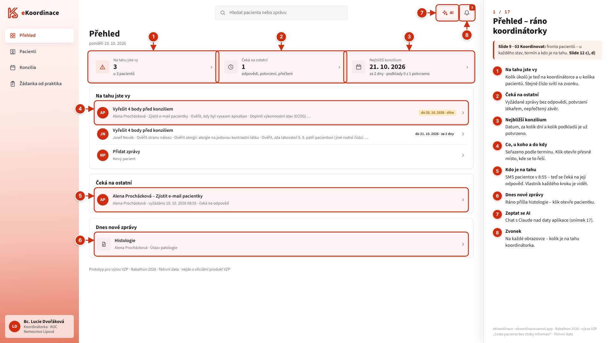
Co říct
- „Ráno koordinátorka otevře Přehled: co je teď na ní, co čeká na ostatní a kdy je nejbližší konzilium.“
- Úkoly jsou seřazené podle termínu (Alena: vyřešit 4 body do 20. 10. – zítra), bez umělého skóre naléhavosti. Klik otevře přesně místo, kde se úkol řeší.
- „Čeká na ostatní“: v 8:55 odešla pacientce SMS s prosbou o e-mail – je vidět, kdo je na tahu, i když to není koordinátorka.
- „Dnes nové zprávy“: ráno přišla histologie. Zvonek nahoře ukazuje stejné číslo na každé obrazovce.
Splňuje: slide 9 – „u každého pacienta je vidět stav, termín a kdo je na tahu“; slide 12 c) přehled případů se stavem a termínem, d) vlastník každého dalšího kroku.
Žádanka od praktika – bez formuláře
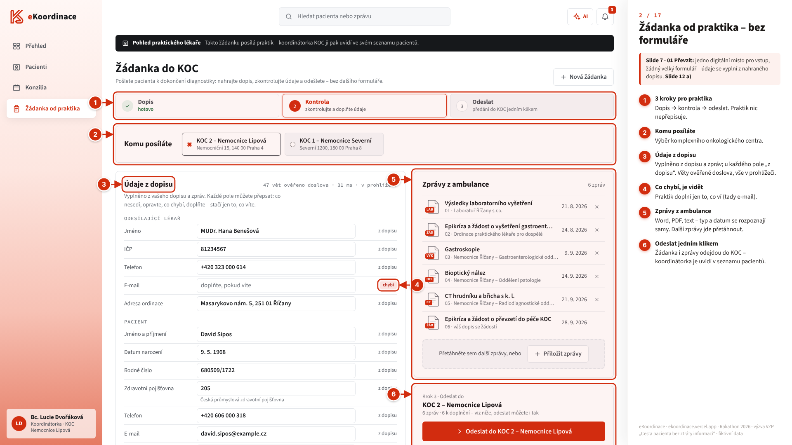
Co říct
- „Takhle to vidí praktik: vybere KOC a přetáhne dopis a zprávy, které už má ve svém softwaru. Žádný velký formulář.“
- Údaje o lékaři, pacientovi a žádosti se vyplní z dopisu – u každého pole je „z dopisu“. Praktik jen opraví, co nesedí, a doplní, co aplikace označila jako „chybí“ (tady e-mail).
- Zprávy z ambulance: Word, PDF, text; typ a datum se rozpoznají samy. Vše se čte v prohlížeči.
- „Odeslat do KOC 2“ – koordinátorka dostane všechno v jednom kroku (v prototypu je odeslání simulované).
Splňuje: slide 7 – „Hotovo, když koordinátor dostane všechny potřebné informace o pacientovi v jednom kroku“; slide 12 a) referování bez dalšího formuláře; zadání „Převzít“.
Nový pacient – zprávy v jakékoli podobě
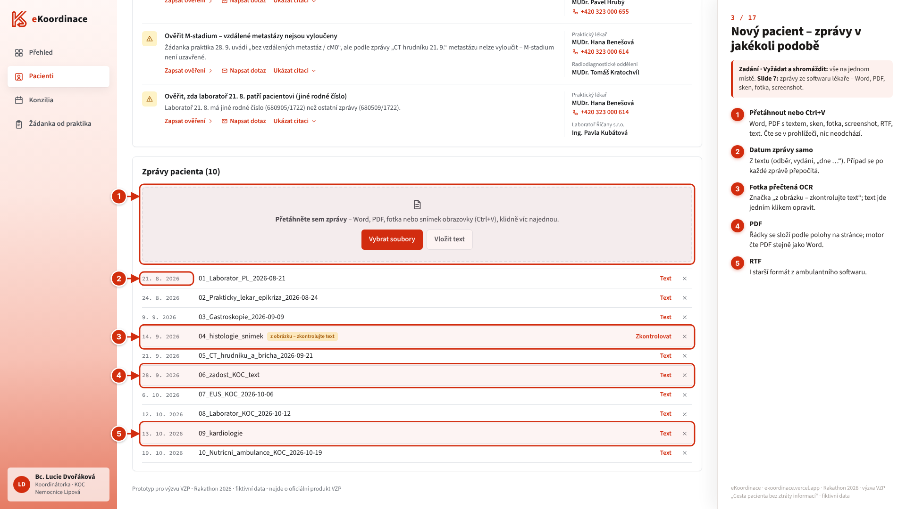
Co říct
- Druhá cesta dovnitř: když praktik žádanku neposlal přes aplikaci, koordinátorka v Pacienti klikne „Nový pacient“ (jméno a termín jsou nepovinné) a přetáhne zprávy – nebo Ctrl+V.
- Tady 10 zpráv Davida Siposa naráz: Word, PDF, RTF i fotka nálezu. Fotka se přečte OCR a dostane značku „z obrázku – zkontrolujte text“; text jde jedním klikem opravit.
- Datum zprávy se najde v textu (odběr, vydání, „dne …“). Případ se po každé zprávě přepočítá – údaje, úkoly i plán.
- Zprávy se čtou v prohlížeči, nikam neodcházejí.
Splňuje: zadání „Vyžádat a shromáždit – vše na jednom místě“; slide 7 nahrání zpráv ze softwaru lékaře (Word, PDF, sken, fotka, screenshot).
Pacienti a hledání
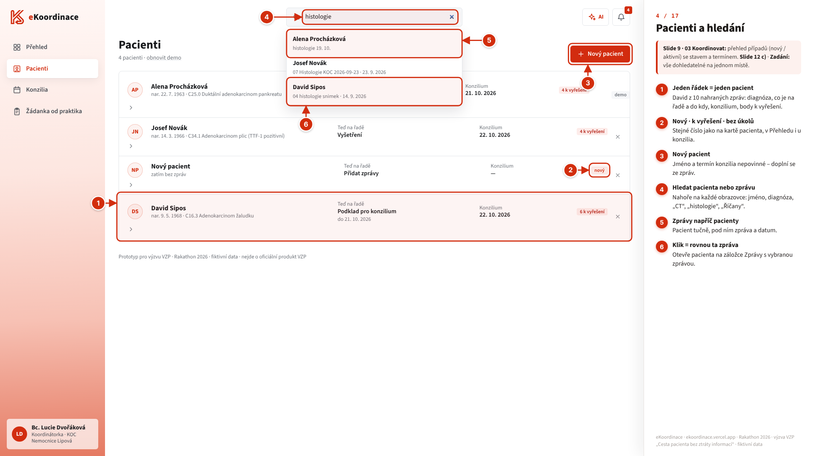
Co říct
- Jeden řádek = jeden pacient: diagnóza, co je teď na řadě a do kdy, termín konzilia a počet bodů k vyřešení.
- David ze snímku 3 je zpracovaný: C16.3 adenokarcinom žaludku, podklad do 21. 10., konzilium 22. 10., 6 bodů k vyřešení.
- Stav případu: „nový“ (bez zpráv), „N k vyřešení“, „bez úkolů“ – stejné číslo je v Přehledu, na kartě pacienta i u konzilia.
- Hledání nahoře na každé obrazovce: „histologie“ najde zprávy napříč pacienty; klik otevře rovnou tu zprávu.
Splňuje: slide 9 fronta pacientů (nový / aktivní) se stavem a termínem; slide 12 c); zadání „vše na jednom místě“.
Pacientka – Souhrn
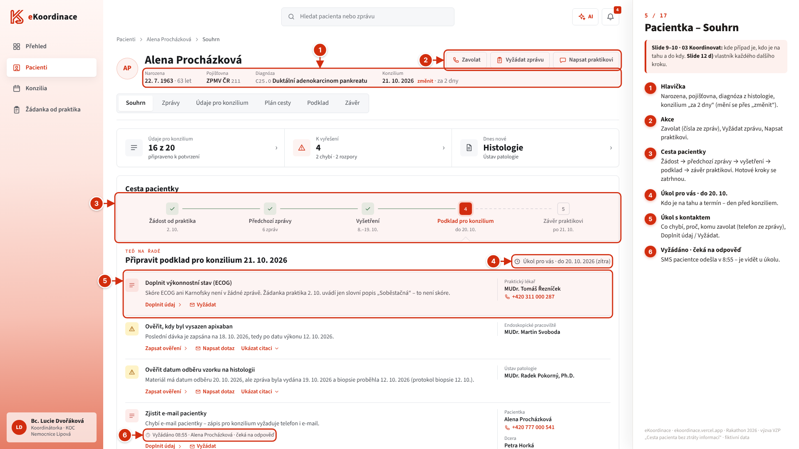
Co říct
- „Tady je Alena ze zadání: 16 z 20 údajů připraveno, 4 body k vyřešení – 2 chybí, 2 si odporují.“
- Cesta pacientky v 5 krocích: žádost od praktika → předchozí zprávy → vyšetření → podklad pro konzilium → závěr praktikovi. Teď je na řadě podklad – „Úkol pro vás do 20. 10.“
- Každý úkol říká, co chybí, proč (věta ze zprávy) a komu zavolat – telefon je převzatý ze zpráv.
- U e-mailu svítí „Vyžádáno 08:55 · čeká na odpověď“ – nikdo se nemusí ptát, v jakém je to stavu.
Splňuje: slide 9–10 – „je jasné, kde je případ a do kdy je třeba udělat další krok“; slide 12 d) vlastník každého dalšího kroku.
Údaje pro konzilium (handover)
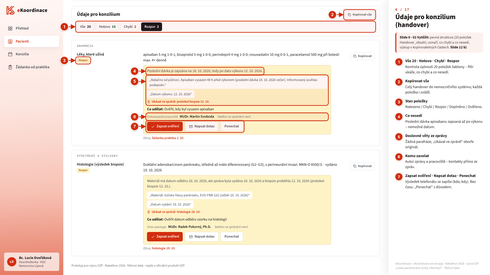
Co říct
- 20 položek přesně podle šablony Handover_obsah. Filtr „Vše 20 · Hotovo 16 · Chybí 2 · Rozpor 2“ je kontrola úplnosti.
- Rozpor u léků: poslední dávka apixabanu zapsaná 18. 10., ale výkon byl 12. 10. Aplikace nehádá – ukáže obě věty doslova a „Ukázat ve zprávě“.
- „Co udělat“ a komu zavolat. Výsledek telefonátu se zapíše přes „Zapsat ověření“ (kdo, kdy, s kým); když není čas, „Ponechat“ s důvodem.
- „Kopírovat“ u každé položky a „Kopírovat vše“ – výstup v kopírovatelných částech do nemocničního systému.
- Kdo vytěžuje: v nasazené verzi motor – pravidla s doslovnou citací a OCR v prohlížeči, aby zprávy neodcházely ven. Vrstva s jazykovým modelem je v motoru hotová, zapneme ji, až bude model v EU nebo v nemocnici (tahák, otázka 1).
Splňuje: slide 8 – pevná struktura, označí, co chybí, výstup v kopírovatelných částech; zadání „upozornění na chybějící nebo nesouhlasící údaje“; slide 12 b) vytěžení s kontrolou úplnosti.
Každý údaj má zdroj
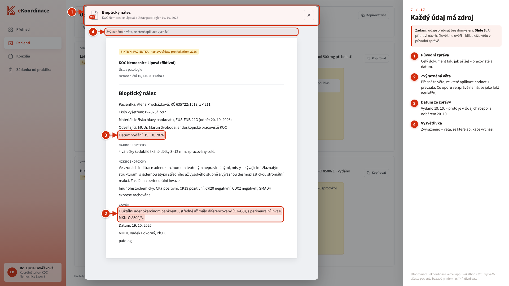
Co říct
- Klik na zdroj u údaje otevře původní zprávu – celý dokument tak, jak přišel.
- Zvýrazněná je přesně ta věta, ze které hodnota pochází – tady závěr histologie.
- Zvýrazněné „Datum vydání: 19. 10. 2026“ vysvětluje rozpor: materiál má datum odběru 20. 10. Aplikace to označí, nerozhoduje.
- Co oporu ve zprávě nemá, se jako fakt neukáže – zůstane „chybí“ nebo „rozpor“.
Splňuje: zadání – „údaje přebírat bez domýšlení, co chybí, označit“; slide 8 – „AI připraví návrh, člověk ho ověří“.
Vyžádat doplnění od lékaře
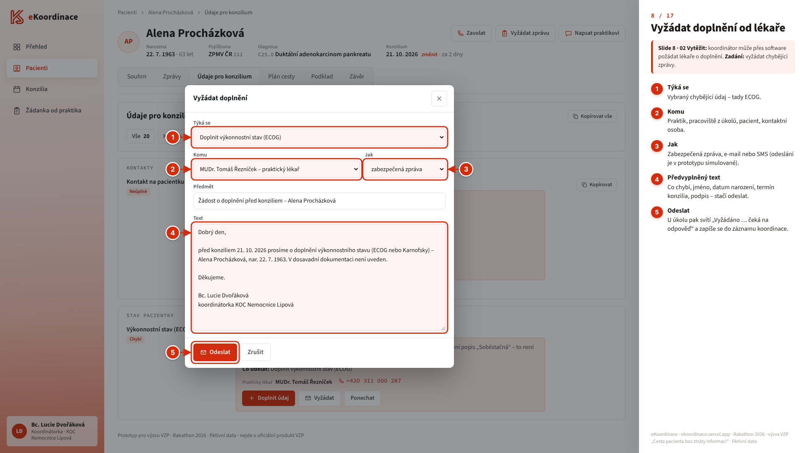
Co říct
- U chybějícího ECOG „Vyžádat“ → předvyplněná žádost: týká se, komu (praktik, pracoviště z úkolů, pacientka, kontaktní osoba), jak (zabezpečená zpráva, e-mail, SMS).
- Text je hotový: co chybí, jméno, datum narození, termín konzilia, podpis – stačí odeslat.
- Po odeslání u úkolu svítí „Vyžádáno … čeká na odpověď“ a v Přehledu „Čeká na ostatní“; vše se zapíše do záznamu koordinace.
- Odeslání je v prototypu simulované.
Splňuje: slide 8 – „koordinátor může přes software požádat lékaře o doplnění“; zadání „Vyžádat a shromáždit“.
Zprávy – vše na jednom místě
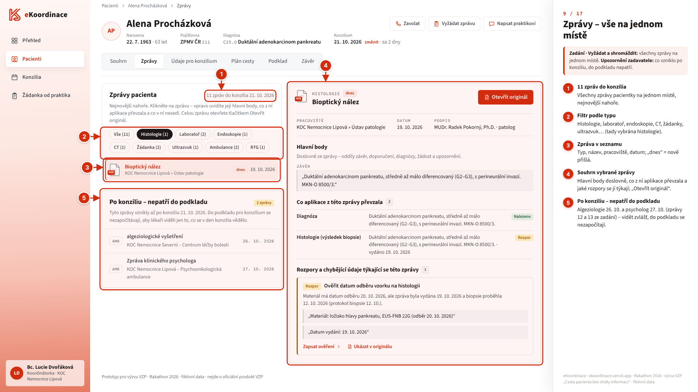
Co říct
- 11 zpráv do konzilia 21. 10. na jednom místě, nejnovější nahoře, filtr podle typu (na snímku vybraná histologie).
- Vpravo souhrn vybrané zprávy: hlavní body doslovně, co z ní aplikace převzala a které rozpory se jí týkají; „Otevřít originál“.
- Dole zvlášť „Po konziliu – nepatří do podkladu“: algeziologie 26. 10. a psycholog 27. 10. (zprávy 12 a 13 ze zadání). Do podkladu se nezapočítají.
Splňuje: zadání „vše na jednom místě“ a upozornění „do zprávy pro MDT patří jen to, co bylo známo k 21. 10. 2026“; slide 9 kontext z referování (strukturovaná zpráva + originál).
Plán cesty – pořadí a stav
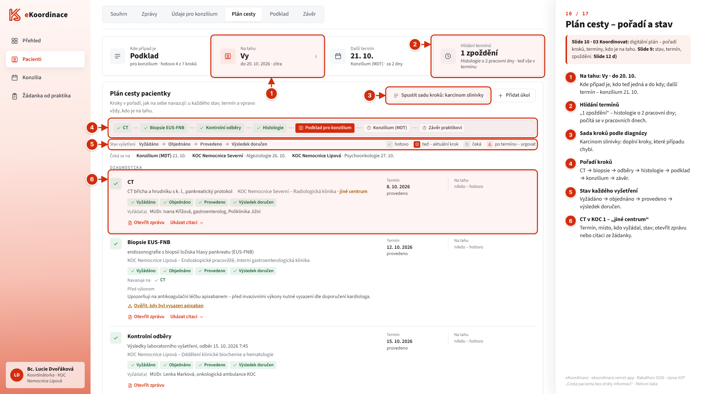
Co říct
- Nahoře: kde případ je (podklad, hotovo 4 ze 7 kroků), na tahu „Vy, do 20. 10. – zítra“, další termín konzilium 21. 10.
- Hlídání termínů: histologie přišla o 2 pracovní dny později, než pracoviště slíbilo – zpoždění se počítá v pracovních dnech.
- „Spustit sadu kroků: karcinom slinivky“ – sada podle diagnózy doplní kroky, které případu chybí.
- Pořadí kroků a stav každého vyšetření: vyžádáno → objednáno → provedeno → výsledek doručen. CT bylo v KOC 1 – „jiné centrum“.
Splňuje: slide 10 digitální plán – sady úloh podle diagnózy, pořadí kroků; slide 9 stav a termín; zadání „CT v KOC 1, biopsie, kontrolní odběry – každý krok s termínem, místem a stavem“.
Plán cesty – návaznost, SMS a e-mail
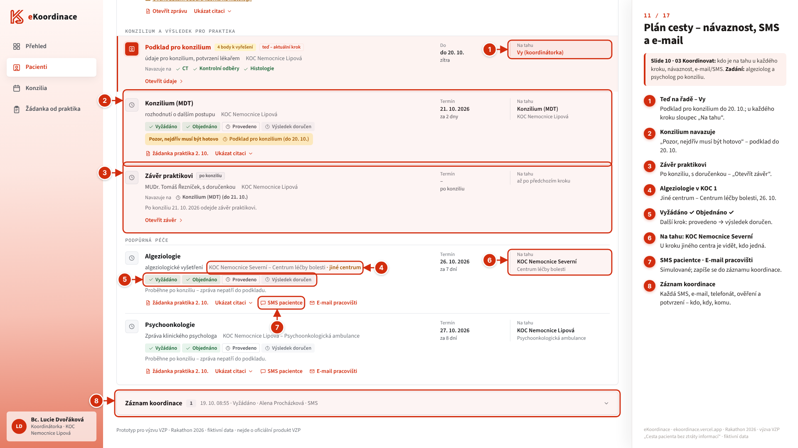
Co říct
- U každého kroku sloupec „Na tahu“: u podkladu koordinátorka, u algeziologie KOC Nemocnice Severní.
- Návaznost: u konzilia „Pozor, nejdřív musí být hotovo – Podklad pro konzilium (do 20. 10.)“; závěr praktikovi až po konziliu.
- Podpůrná péče ze zadání: algeziolog v KOC 1 (26. 10.) a psycholog (27. 10.) – proběhnou po konziliu, jejich zprávy nepatří do podkladu.
- „SMS pacientce“ a „E-mail pracovišti“ (simulované) – a všechno se zapíše do „Záznamu koordinace“: kdo, kdy, komu.
Splňuje: slide 10 – e-mail/SMS, kdo je na tahu; zadání „algeziolog, psycholog – každý krok s termínem, místem a stavem“; slide 12 d).
Podklad pro konzilium – zamčeno
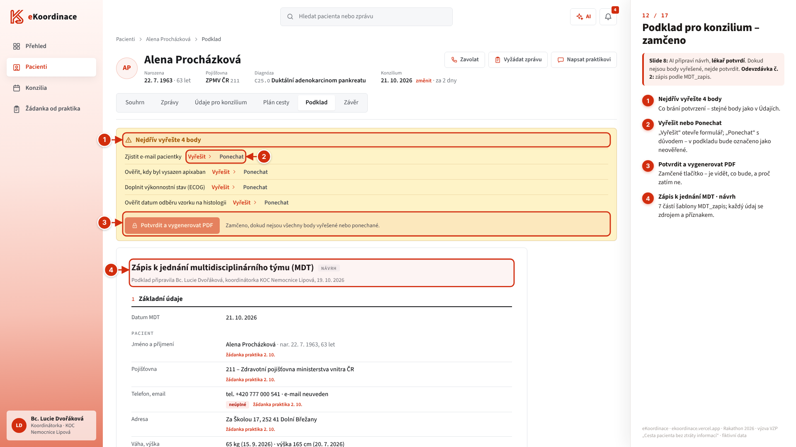
Co říct
- Podklad je „Zápis k jednání multidisciplinárního týmu (MDT)“ přesně v 7 částech šablony MDT_zapis – zatím jako návrh.
- „Nejdřív vyřešte 4 body“: každý jde „Vyřešit“ (otevře formulář), nebo „Ponechat“ s důvodem – v podkladu bude označený jako neověřený.
- „Potvrdit a vygenerovat PDF“ je zamčené – je vidět, co bude, a proč zatím ne.
- U každého údaje je zdroj a příznak (např. „neúplné“ u kontaktu).
Splňuje: slide 8 – „AI připraví návrh, lékař potvrdí“; odevzdávka č. 2 – zpráva k jednání MDT podle MDT_zapis.
Podklad potvrzen → PDF
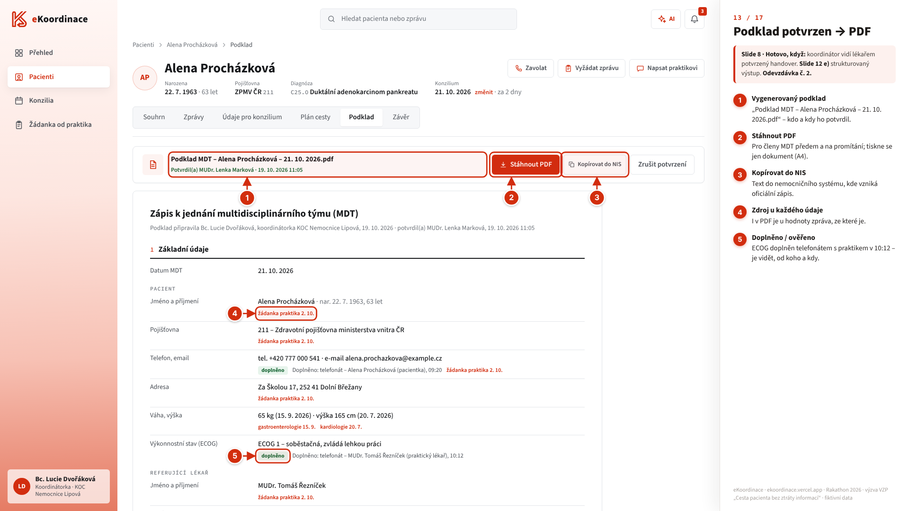
Co říct
- Po vyřešení bodů lékařka KOC (MUDr. Lenka Marková) potvrdí → vznikne „Podklad MDT – Alena Procházková – 21. 10. 2026.pdf“.
- „Stáhnout PDF“ pro členy MDT a na promítání; „Kopírovat do NIS“ – text do nemocničního systému, kde vzniká oficiální zápis.
- U doplněných údajů je vidět, odkud jsou: ECOG z telefonátu s praktikem v 10:12, e-mail od pacientky v 9:20.
- Každá hodnota má zdroj i v PDF. Když se data po potvrzení změní, potvrzení se zruší.
Splňuje: slide 8 – „Hotovo, když koordinátor vidí lékařem potvrzený strukturovaný handover“; slide 12 e) strukturovaný výstup; odevzdávka č. 2.
Na konziliu: části 6 a 7
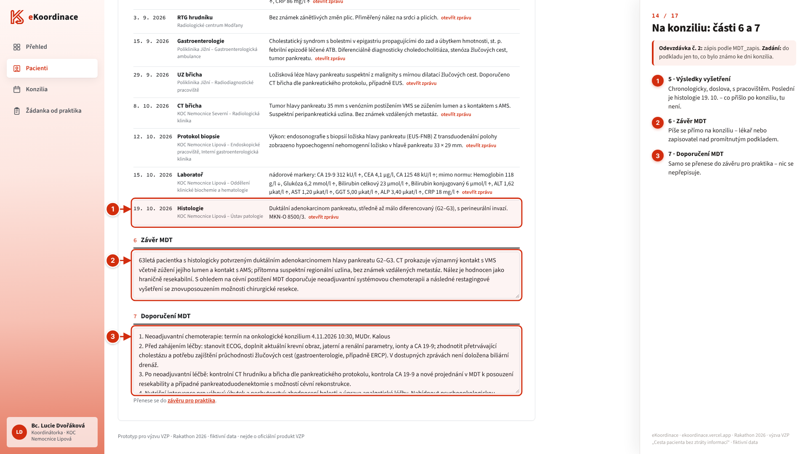
Co říct
- Část 5 – výsledky vyšetření chronologicky, doslova, s pracovištěm. Poslední je histologie 19. 10.; zprávy z 26. a 27. 10. tu nejsou.
- Části 6 „Závěr MDT“ a 7 „Doporučení MDT“ se píšou přímo na konziliu – lékař nebo zapisovatel nad promítnutým podkladem.
- Doporučení se samo přenese do závěru pro praktika – nic se nepřepisuje.
Splňuje: odevzdávka č. 2 (všech 7 částí MDT_zapis); zadání „podklad pro MDT jen z údajů dostupných k 21. 10.“; slide 12 e) strukturovaný závěr MDT.
Závěr praktikovi s doručenkou
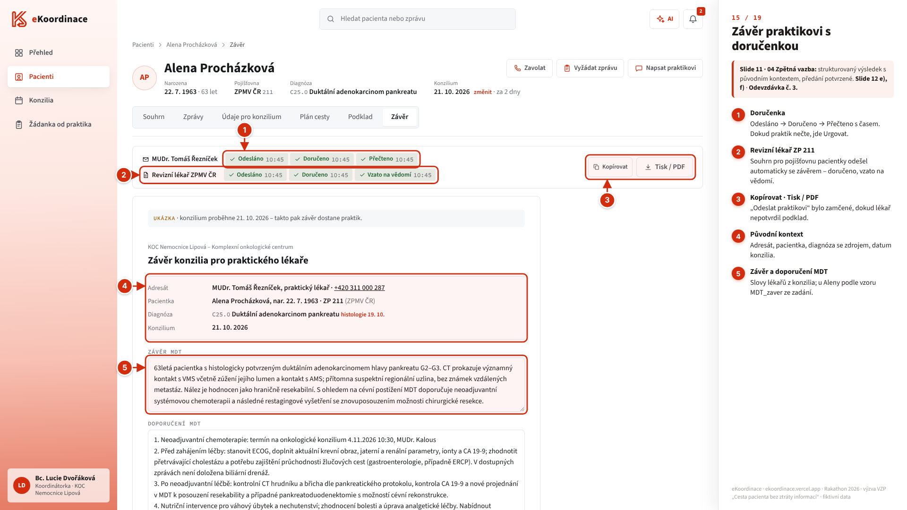
Co říct
- Závěr konzilia pro praktika: adresát, pacientka, diagnóza se zdrojem a datum konzilia, pak závěr, doporučení a další postup slovy lékařů (u Aleny podle vzoru MDT_zaver ze zadání).
- „Odeslat praktikovi“ jde až po potvrzení podkladu. Pak doručenka: Odesláno → Doručeno → Přečteno s časem; dokud praktik nečte, jde „Urgovat“.
- Po doručení se krok „Závěr praktikovi“ v cestě pacientky uzavře – smyčka je zavřená.
- „Ukázka“: konzilium je až 21. 10. – v demu je vidět, co pak praktik dostane.
Splňuje: slide 11 – „Hotovo, když referující lékař má výsledek i s kontextem a předání je potvrzené“; slide 12 e), f); odevzdávka č. 3 – ukázka odeslání závěru MDT praktikovi. S odesláním jde automaticky i strukturovaný souhrn reviznímu lékaři pojišťovny pacientky (ZP 211); jeho žádost o doplnění se objeví jako úkol a odpověď jde zpět.
Konzilia – program a připravenost
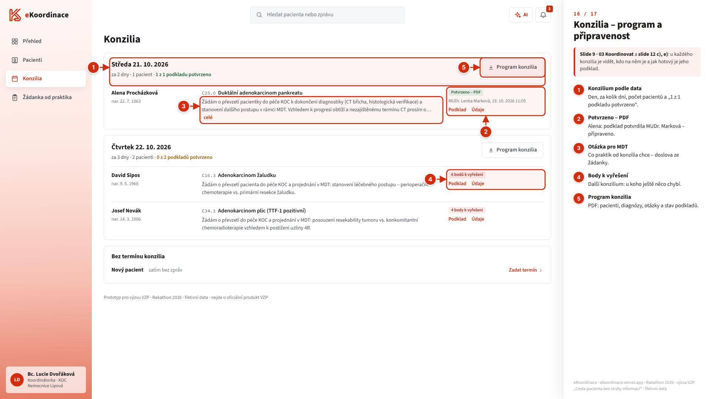
Co říct
- Konzilia podle data: den, za kolik dní, počet pacientů a „1 z 1 podkladu potvrzeno“.
- U každého pacienta otázka pro MDT doslova ze žádanky a stav podkladu: „Potvrzeno – PDF“ (kdo a kdy), nebo „N bodů k vyřešení“.
- „Program konzilia“ – PDF programu pro členy MDT.
Splňuje: slide 9 – stav a termín u každého případu; slide 12 c) přehled případů, e) podklad pro MDT.
Zeptat se AI (Claude)
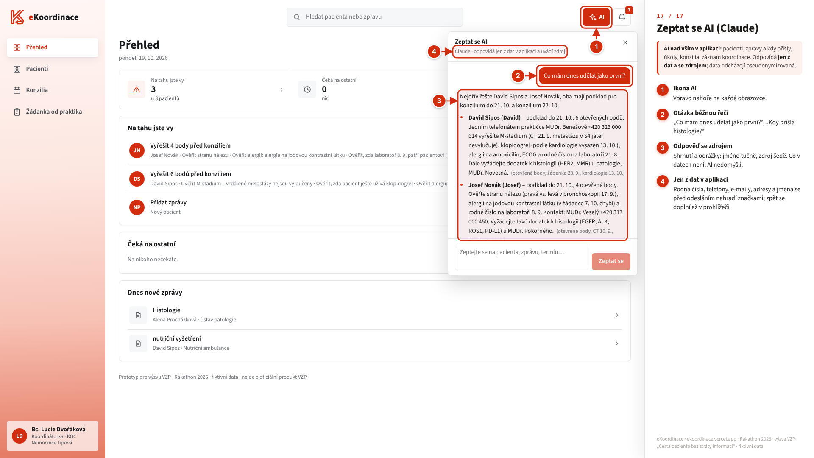
Co říct
- Ikona AI je na každé obrazovce: otázka běžnou řečí, např. „Co mám dnes udělat jako první?“ nebo „Kdy přišla histologie?“.
- Claude odpovídá jen z dat v aplikaci – pacienti, zprávy a kdy přišly, úkoly, konzilia, záznam koordinace – a u každého bodu uvádí zdroj (šedě).
- Před odesláním se rodná čísla, telefony, e-maily, adresy a jména nahradí značkami; skutečné hodnoty se do odpovědi vrátí až v prohlížeči.
- Odpověď se při každém dotazu generuje znovu – na živém demu bude znít jinak než na snímku.
Splňuje: hodnoticí kritérium „AI technologie a provedení“; slide 9 – přehled, co je na tahu.
Požadavek ze zadání → kde to v aplikaci je
Zdroj: deck výzvy (slidy 5–12), Zadani_ulohy.docx a odevzdávky. Čísla odkazují na snímky výše. Co zatím chybí, je označené ne nebo zatím není.
| Požadavek | Kde to v aplikaci je | Snímek |
|---|---|---|
| Slide 5 – tři místa, kde se ztrácí informace | ||
| Na vstupu: dokumentace roztříštěná a neúplná, lékaři přepisují údaje | Žádanka od praktika bez formuláře; Nový pacient – zprávy v jakékoli podobě | 2, 3 |
| Uvnitř KOC: dohledávání, chybí přehled stavu, termínů a odpovědnosti | Přehled, Pacienti, Souhrn, Údaje, Zprávy, Plán cesty, Konzilia | 1, 4–11, 16 |
| Na výstupu: praktik neví, jak MDT rozhodlo | Závěr praktikovi s doručenkou | 15 |
| Slide 7 – 01 Převzít | ||
| Jedno digitální místo pro vstup do KOC, výběr KOC | Žádanka od praktika → „Komu posíláte“ | 2 |
| Bez dalšího velkého formuláře, zbytek z nahrané zprávy | „Údaje z dopisu“ – každé pole „z dopisu“, praktik jen doplní „chybí“ | 2 |
| Nahrát zprávy ze svého softwaru | Zprávy z ambulance; Nový pacient – Word, PDF, RTF, sken, fotka (OCR), Ctrl+V | 2, 3 |
| Hotovo, když koordinátor dostane vše v jednom kroku | „Odeslat do KOC“ jedním klikem → pacient v seznamu koordinátorky (odeslání simulované) | 2, 4 |
| Slide 8 – 02 Vytěžit | ||
| Klíčové údaje do pevné struktury | Údaje pro konzilium – 20 položek Handover_obsah, každá s doslovnou citací | 6, 7 |
| Označí, co chybí (a co nesedí) | Filtr Chybí / Rozpor, úkoly s důvodem a kontaktem | 5, 6 |
| Výstup v kopírovatelných částech | „Kopírovat“ u položky, „Kopírovat vše“, „Kopírovat do NIS“ | 6, 13 |
| AI připraví návrh, lékař potvrdí | Podklad zamčený, dokud nejsou body vyřešené → „Potvrdit a vygenerovat PDF“ (MUDr. Marková). Návrh v nasazené verzi dělá motor s ověřenými citacemi, ne jazykový model | 12, 13 |
| Požádat lékaře o doplnění přes software | „Vyžádat“ – předvyplněná žádost, komu, jak | 8 |
| Hotovo, když koordinátor vidí lékařem potvrzený handover a seznam chybějících údajů | Potvrzený podklad + filtr Chybí | 13, 6 |
| Slide 9 – 03 Koordinovat (dashboard) | ||
| Fronta pacientů: nový / aktivní / odložený | Pacienti: „nový“, „N k vyřešení“, „bez úkolů“. Stav „odložený“ zatím není | 4 |
| Detail s kontextem z referování | Souhrn (cesta, úkoly), Zprávy (souhrn zprávy + originál), otázka pro MDT ze žádanky | 5, 9, 16 |
| Úkoly s termínem a prioritou | Přehled „Na tahu jste vy“ – řazeno podle termínu (záměrně bez skóre naléhavosti) | 1 |
| Hotovo, když je u každého pacienta vidět stav, termín a kdo je na tahu | Přehled, Pacienti, Souhrn, Plán „Na tahu“, Konzilia | 1, 4, 5, 11 |
| Slide 10 – 03 Koordinovat (digitální plán) | ||
| Sady úloh podle diagnózy (karcinom pankreatu) | „Spustit sadu kroků: karcinom slinivky“ | 10 |
| Pořadí kroků a návaznost | Pořadí CT → … → závěr; „Pozor, nejdřív musí být hotovo“ | 10, 11 |
| E-mail / SMS / chat, notifikace | SMS pacientce, E-mail pracovišti, Vyžádat (simulované); zvonek; Zeptat se AI. Chat mezi lidmi není | 11, 8, 1, 17 |
| Hotovo, když je jasné, kde je případ a do kdy další krok | Plán: „Kde případ je“, „Na tahu“, „Hlídání termínů“ | 10 |
| Slide 11 – 04 Zpětná vazba | ||
| Strukturovaný výsledek s původním kontextem praktikovi | Závěr pro praktika: adresát, pacientka, diagnóza se zdrojem, konzilium, závěr a doporučení MDT | 15 |
| Revizní lékař automaticky | Souhrn pro revizního lékaře pojišťovny pacientky (u Aleny ZPMV ČR 211, ne automaticky VZP) odejde se závěrem: diagnóza, histologie, ECOG, rozhodnutí a plánovaná léčba; doručenka a „vzato na vědomí“ (simulované) | 15 |
| Revizní lékař si vyžádá doplnění | „Žádá doplnění“ → úkol „Odpovědět reviznímu lékaři“ v Přehledu a ve zvonku → odpověď → „vzato na vědomí“ | 15 |
| Potvrdit předání a uzavřít případ | Doručenka Odesláno → Doručeno → Přečteno, Urgovat; krok cesty se uzavře | 15 |
| Slide 12 – demo musí ukázat | ||
| a) Referování do KOC bez dalšího formuláře | Žádanka od praktika | 2 |
| b) AI vytěžení s kontrolou úplnosti | Údaje pro konzilium (20 položek, chybí/rozpor, citace); Claude v „Zeptat se AI“ | 6, 7, 17 |
| c) Přehled případů se stavem a termínem | Přehled, Pacienti, Konzilia | 1, 4, 16 |
| d) Vlastník každého dalšího kroku | „Na tahu jste vy“ / „Čeká na ostatní“, „Úkol pro vás“, sloupec „Na tahu“ | 1, 5, 10, 11 |
| e) Strukturovaný závěr KOC / MDT | Podklad podle MDT_zapis (PDF), části 6 a 7, závěr pro praktika | 13, 14, 15 |
| f) Zpětná vazba a potvrzené předání | Odeslat praktikovi + doručenka | 15 |
| Zadani_ulohy.docx – co má aplikace umět | ||
| Převzít – žádost praktika o převzetí do KOC 2 | Žádanka od praktika (KOC 2 – Nemocnice Lipová) | 2 |
| Vyžádat a shromáždit – chybějící zprávy z jiných pracovišť, vše na jednom místě | Vyžádat, Nový pacient + zprávy, Zprávy, Hledání | 3, 4, 8, 9 |
| Vytěžit – upozornit na chybějící nebo nesouhlasící údaje | Údaje pro konzilium (Chybí 2, Rozpor 2), citace | 6, 7 |
| Koordinovat – CT v KOC 1, biopsie, kontrolní odběry, algeziolog, psycholog; termín, místo, stav | Plán cesty | 10, 11 |
| Podklad pro MDT jen z údajů dostupných k 21. 10. | „Po konziliu – nepatří do podkladu“; výsledky v podkladu končí 19. 10. | 9, 14 |
| Uzavřít smyčku – závěr praktikovi a doložit doručení | Závěr praktikovi s doručenkou | 15 |
| Údaje přebírat bez domýšlení, co chybí, označit | Doslovné citace, „chybí“ / „rozpor“ místo odhadu | 6, 7 |
| Co odevzdat | ||
| 1. Funkční demo celého průchodu pacientky | ekoordinace.vercel.app – snímky 1–17 v pořadí dema | 1–17 |
| 2. Zpráva k jednání MDT podle MDT_zapis | Podklad → „Stáhnout PDF“ (7 částí) | 12–14 |
| 3. Ukázka odeslání závěru MDT praktikovi | Závěr → „Odeslat praktikovi“ + doručenka | 15 |
Co nemáme – říct na rovinu, když se zeptají
- Revizní lékař (slide 11): souhrn odchází automaticky, ale kanál k pojišťovně je simulovaný; skutečně by šel přes B2B portál pojišťovny nebo FHIR.
- Skutečné odesílání – žádanka, e-mail, SMS i zabezpečená zpráva jsou simulované; zapíšou se do záznamu koordinace.
- Chat mezi lidmi (slide 10) – komunikace jde přes simulované zprávy, e-mail a SMS; chat je jen s AI.
- Napojení na NIS a eŽádanku patří podle slidu 12 do další fáze – dnes „Kopírovat do NIS“ a PDF.
- FHIR export – datový model jde namapovat (DocumentReference, Provenance, Task, Composition), export zatím není.
- Stav „odložený“ ve frontě (slide 9) zatím není; priorita = pořadí podle termínu, záměrně bez skóre naléhavosti.
- Vytěžení v nasazené verzi dělá motor s pravidly a ověřenou citací (a OCR v prohlížeči); jazykový model běží jen v „Zeptat se AI“ nad pseudonymizovanými daty.
- Data žijí v prohlížeči (localStorage) – „obnovit demo“ v seznamu Pacienti je smaže.